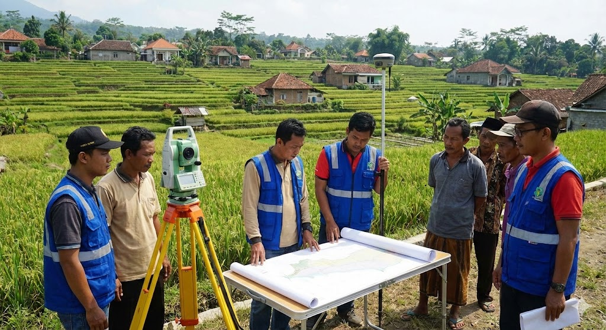
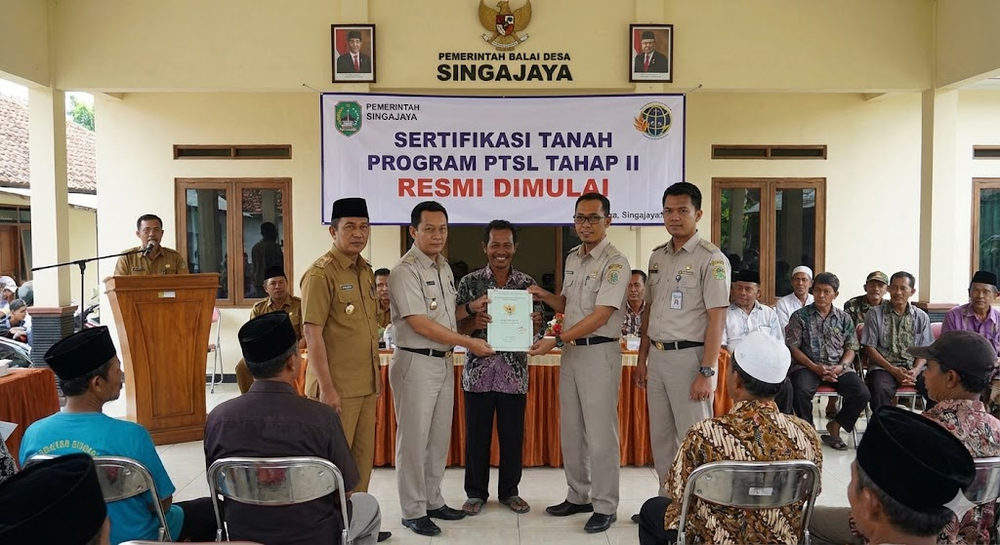
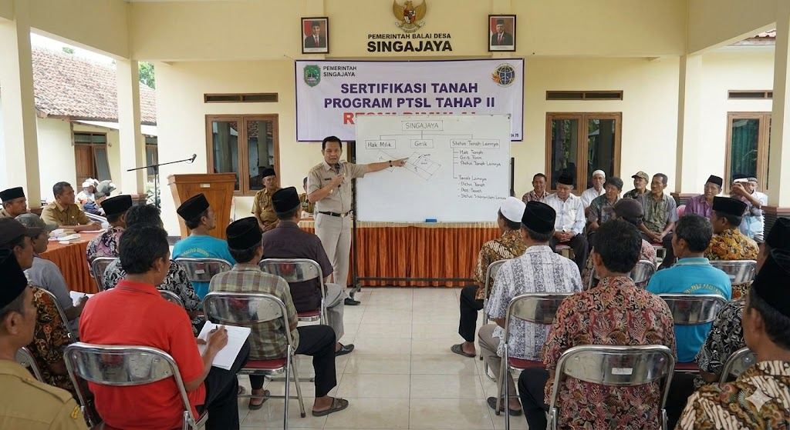
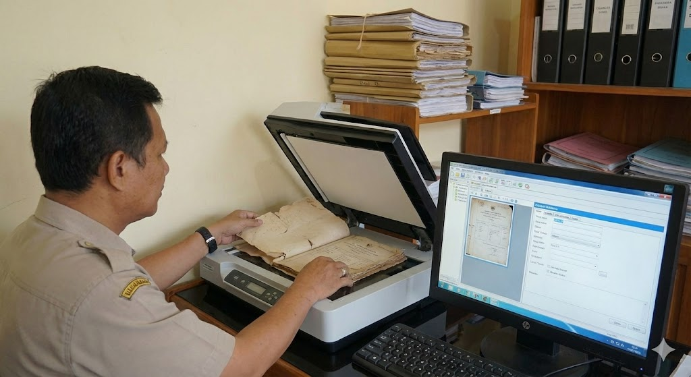

Pemdes Singajaya Rampungkan Pemetaan Tanah Warga Tahun 2025
Proses pendataan dan pemetaan bidang tanah warga telah selesai dilakukan sebagai dasar legalitas pertanahan.

Sertifikasi Tanah Program PTSL Tahap II Resmi Dimulai
Pemerintah Desa Singajaya bekerja sama dengan BPN memulai tahap kedua program Pendaftaran Tanah Sistematis Lengkap (PTSL).

Sosialisasi Hak dan Status Tanah Digelar untuk Warga Singajaya
Warga diberikan pemahaman tentang hak milik, girik, dan status tanah lainnya dalam forum terbuka di balai desa.

Digitalisasi Arsip Pertanahan: Desa Singajaya Menuju Transparansi Data
Desa Singajaya melakukan digitalisasi arsip pertanahan sebagai langkah menuju transparansi dan kemudahan akses data.